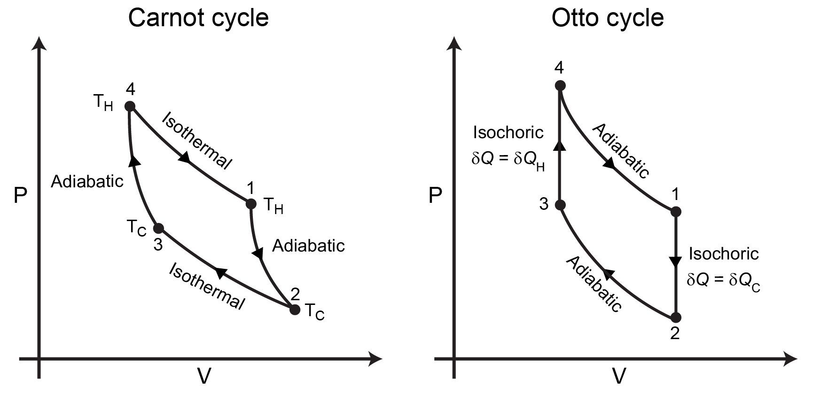
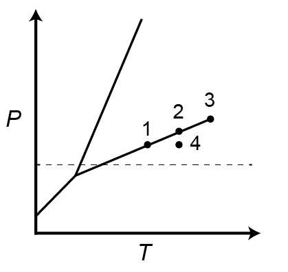
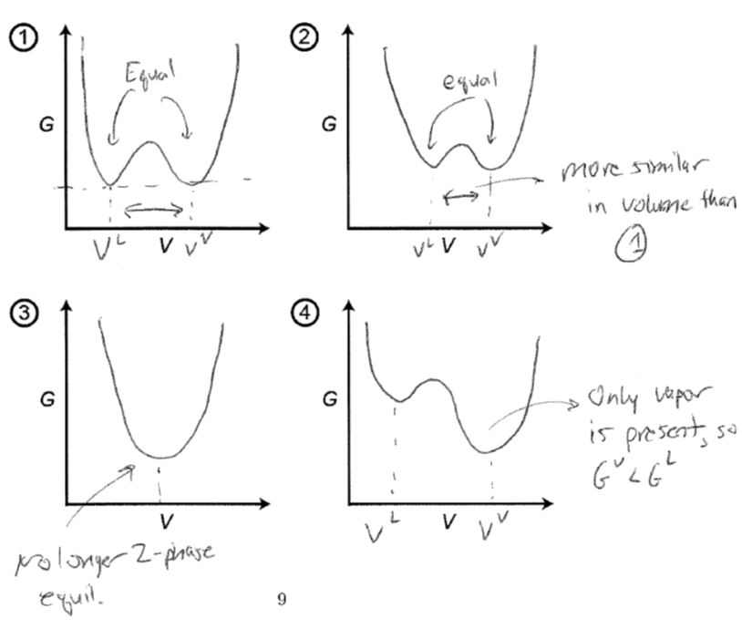
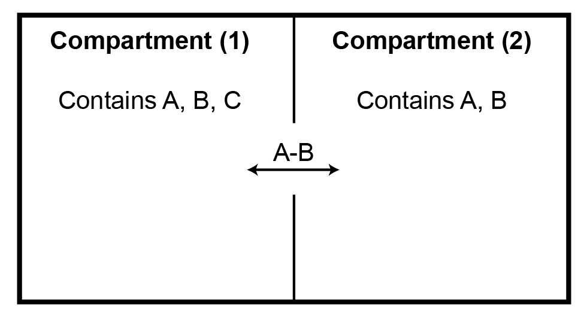
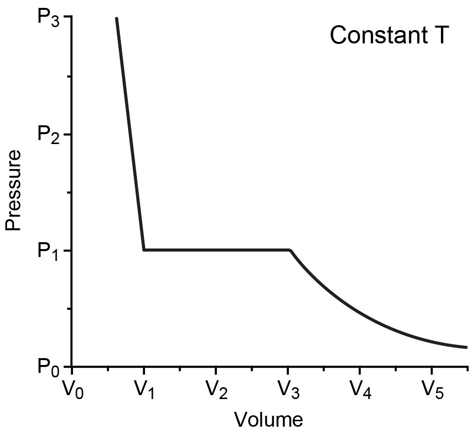
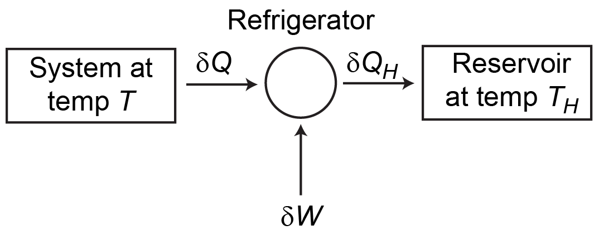

Practice Problems for Unit Exam#
See below for practice problems related to CBE710, Fall 2023.
As I may choose to rotate these questions into future iterations of the class, this page will not be available in future archives.
Question 1: Thermodynamic cycle analysis#
In Problem Set 4, we derived the efficiency of the Carnot cycle by analyzing the work and heat interactions for an ideal gas working fluid. The efficiency of a thermodynamic cycle is:
where \(\delta W_E\) is the total work done during the cycle and \(\delta Q_H\) is the heat transferred at the “hot” temperature. The Carnot cycle and the Otto cycle are illustrated in the \(P-V\) diagrams below.

(a)
By considering entropy changes, rather than work and heat interactions alone, derive the efficiency of the Carnot cycle in terms of \(T_H\) and \(T_C\) for an ideal gas assuming that all steps are reversible.
Click for answer
During the Carnot cycle, the total internal energy change and total entropy change of the system must both be zero since these are both state functions. We can thus write:
Since all heat transfers occur along isothermal paths, the expression for the entropy simplifies to:
Note that this expression was used in the original derivation of the entropy. We can then write for the efficiency:
We regain the efficiency of the Carnot cycle as expected.
(b)
Does the efficiency of the Carnot cycle depend on the choice of working fluid (i.e., is the efficiency the same for a non-ideal gas)? Explain your rationale.
Click for answer
The derivation in part a is performed only using state functions that do not depend on the identity of the working fluid, so the thermal efficiency would be the same for any working fluid considered.
(c)
The Otto cycle is shown above; \(\delta Q_H\) and \(\delta Q_C\) are labeled as the heat interactions during the isochoric (constant volume) heating and cooling steps, respectively. If we assume that all steps are reversible, show that the efficiency of the Otto cycle for an ideal gas working fluid is:
where \(V_1\) and \(V_3\) are the volume of the gas at the states labeled as \(1\) and \(3\), respectively, and \(\gamma = \frac{C_P}{C_V}\). Assume that \(C_P\) and \(C_V\) are not functions of temperature.
Hint
In Problem Set 4, we showed that the following relation is true for an ideal gas for any reversible adiabatic path connecting an initial (\(i\)) and final (\(f\)) state:
Given that we can compute the efficiency in terms of temperature (although we must use our energy, not entropy, paths in this case to do so), this gives us a convenient way to then convert our equation to one in terms of volume.
Click for answer
We can approach this solution following a similar approach as Problem Set 4. First, we recognize that we can apply the First Law as with the Carnot cycle to define the efficiency as:
The two heat interactions only occur along the isochoric (constant volume) paths; since these paths are no longer isothermal, we cannot trivially calculate the entropy change. Instead, we can compute the heat directly by applying the First Law along each constant volume path, since the work will be zero:
For an ideal gas, we know that the internal energy change is only a function of the temperature, so we can write in general:
Here, we assume that \(C_V\) itself is not a function of temperature. We can then define the efficiency in terms of the temperatures of the various states as:
For an ideal gas working fluid the heat capacities cancel out. The problem, though, is that these temperatures are unknown. We can relate them by recognizing that for an ideal gas the following relationship holds true along the reversible adiabats (derived in Problem Set 4):
Substituting in the ideal gas equation of state for the pressure gives:
We can thus apply this relationship to relate \(T_1\) and \(T_4\) and \(T_2\) and \(T_3\), recognizing that \(V_1 = V_2\) and \(V_3 = V_4\):
Substituting this all in yields the efficiency:
(d)
Does the efficiency of the Otto cycle depend on the choice of working fluid (i.e., is the efficiency the same for a non-ideal gas)? Explain your rationale.
Click for answer
In our derivation above, we made the assumption that \(C_V\) is not a function of temperature or other thermodynamic parameters, such that it cancels out of the final expression. This assumption will generally not be true for all working fluids, so the Otto cycle efficiency does depend on the choice of working fluids, unlike the Carnot cycle efficiency. Similarly, the relationship between parameters defined for the reversible adiabats is also not generally true and follows only from the ideal gas equation of state.
Question 2: Joule-Thomson inversion temperature#
The Joule-Thomson expansion (studied in Problem Set 5) involves forcing a gas through an insulated valve from a region of high pressure to a region of low pressure at constant enthalpy.
(a)
Derive an expression for the differential change in the temperature of the gas as a function of the differential change in pressure for a closed, single-component system undergoing a Joule-Thomson expansion. Your answer should be of the form:
where \(\alpha = \frac{1}{V} \left ( \frac{\partial V}{\partial T} \right )_P\) is the coefficient of thermal expansion.
Click for answer
There are potentially many ways to do this.
One way is to start by writing out the exact differential of the temperature in terms of the pressure at constant enthalpy (which is key to this problem), as this is an expression we can then integrate.
The challenge here is that this partial derivative has no clear physical meaning, so we need to transform it to something more useful. Again, there are many ways to proceed here, but one is to write out the derivative as:
We can next simplify this by seeing that \(\left ( \frac{\partial H}{\partial T} \right )_P\) can also be simplified and related to the heat capacity at constant pressure by applying the expansion rule to the exact differential of the enthalpy:
This gives us one of the two derivatives. We can also now simplify \(\left ( \frac{\partial H}{\partial P} \right )_T\) following the same approach:
We can also recognize that we can simplify the new partial derivative that arises through an appropriate Maxwell relation:
This last partial derivative is related to the coefficient of thermal expansion, \(\alpha\), through:
Putting this all together, we obtain:
(b)
During the Joule-Thomson expansion, the temperature of the gas will either increase or decrease depending on whether its initial temperature is above or below a materials parameter called the inversion temperature. Based on your solution to part a, write an expression for the inversion temprature.
Click for answer
We can see from the preceding expression that the change in temperature during this process will depend on the sign of the quantity \(T \alpha - 1\) since the volume and heat capacity are always positive quantities. The inversion temperature is then:
(c)
Is there an inversion temperature for an ideal gas? Explain your answer.
Click for answer
We can evaluate the term in parentheses from part a using the ideal equation of state:
There is thus no change in the temperature of an ideal gas during a Joule-Thomson expansion so it does not have an inversion temperature.
Question 3: Single-component phase behavior#
The plot below shows a typical \(P-T\) phase diagram for a single-component system.

(a)
Sketch plots of the molar Gibbs free energy, \(G\), vs. molar volume, \(V\), for each of the four points labeled on the phase diagram. Label the molar volume of each relevant phase on your diagrams and ensure that your plots qualitatively capture expected trends.
Click for answer

(b)
Briefly explain your rationale for how you sketched the plots plots in part a. Only a qualitative explanation is required (no equations are necessary).
Click for answer
There are a few guiding principles behind these plots. First, the Gibbs free energy should reach a local minimum at the molar volume corresponding to the liquid and vapor phases, since each phase has a single well-defined molar volume even if it does not appear at equilibrium. Second, the Gibbs free energy should reach a global minimum at the molar volume corresponding to the phase that appears at equilibrium. If two phases are in coexistence, the Gibbs free energy of each phase should be equal. Third, the molar volume of the liquid phase and vapor phase should become closer to each other as the system until they reach the same value at the critical point.
Question 4: Work of separation#
(a)
Show that the change in the Gibbs free energy is equal to the reversible non-PV work (i.e., the sum of all work terms other than pressure-volume work, such as the work done to change system composition) done on the system for any process at constant temperature and pressure.
Click for answer
From the First Law, we can write the total energy change as:
We can further break the work term into two components related to \(PV\) work and non-\(PV\) work:
If the process is reversible, we can replace \(\delta Q\) by \(\int TdS\), and if the process is isothermal then we obtain:
Similarly, we can replace the \(PV\) work term with \(-\int P dV\), which for an isobaric process is then:
(b)
Write an expression for the work needed to separate a single-phase binary gas mixture into two single-component gases in terms of the composition of component 1 (\(y_1\)). Assume the process is at constant temperature and pressure and is reversible.
Click for answer
We can immediately apply the relationship from part a to determine the work required for demixing. In this case, we must do work on the system equal to the negative of the Gibbs free energy of mixing, since we are demixing the system:
For a gas mixture, we can generally apply the ideal solution approximation (even if the gases are not ideal) since the likelihood of strong cross interactions is small. Using this approximation, the Gibbs free energy of mixing is equal to only the entropy of mixing:
(c)
Rewrite your expression from part b without assuming that the process is reversible.
Hint
Your final expression will be an inequality.Click for answer
If the process is not reversible, then the expression for the entropy change for an isothermal process is:
That is, we can no longer equate the entropy change to the heat transferred divided by the temperature (this follows from the Second Law of Thermodynamics). Returning to part a, we find that increasing the entropy change thus indicates that \(T\Delta S > T\Delta S_\textrm{rev}\) and accordingly \(\delta W^{\textrm{other}} < \Delta G\). Replacing the expression in part b and adjusting the inequality then yields:
The key point here is that the Gibbs free energy of mixing tells me the minimum amount of work necessary to separate the two gases, while the actual amount of work could be larger if the process is irreversible.
(d)
Write a expression for the work required to separate a binary mixture into single-component systems at constant temperature and pressure in terms of the fugacity of each component without assuming the process is reversible.
Click for answer
This question is a straightforward extension of the prior two. We can write in general:
where the equality only holds for a reversible process. We can then replace the expression for \(\Delta G_\textrm{mix}\) using a relation derived in class as follows:
Question 5: Expansion of a non-ideal gas#
A gas obeys the following equation of state:
Here, \(B(T)\) is a function of temperature. The partial derivative of \(B(T)\) with respect to temperature at constant volume is \(B'(T)\). The gas is initially at a temperature \(T_1\) and volume \(V_1\) and is isothermally and reversible expanded to a new volume, \(V_2 = 2 V_1\).
(a)
Calculate the entropy change of the gas during this process in terms of only parameters defined in the problem statement.
Click for answer
We can write the exact differential of the entropy as a function of volume at constant temperature as:
We do not have an obvious expression for this partial derivative or a means to directly calculate it from an equation of state. However, we can transform this to a more convenient form using an appropriate Maxwell relation. Specifically, we can write for the Helmholtz free energy:
We can evaluate this expression for the equation of state:
Integrating this expression as a function of volume along an isothermal path yields the entropy change:
(b)
Calculate the energy change of the gas during this process in terms of only parameters defined in the problem statement.
Click for answer
The idea here is that we can write by the first law:
We can compute the work from the change in volume by:
Since we have an equation of state, we can substitute in the expression for pressure and integrate directly given that the process is isothermal.
We can obtain the heat from the change in entropy, recognizing that:
Since the path is isothermal, we know that \(\delta Q = T\Delta S\). The result from part a then gives:
The total internal energy change is then:
Question 6: Semi-permeable membrane#
A system is divided into two compartments by a rigid, diathermal, semi-permeable membrane. Compartment (1) contains an ideal-gas mixture with three components, \(A\), \(B\), and \(C\), while compartment (2) contains an ideal-gas mixture with only two components, \(A\) and \(B\). The membrane is impermeable to component \(C\) and only allows pairs of \(A-B\) molecules to pass the membrane simultaneously. The entire system (i.e., both compartments taken together) is isolated.

(a)
Derive all equilibrium conditions that must be satisfied for this system.
Click for answer
Since the entire system is isolated, we know that at equilibrium any first-order variation in the entropy has to be zero. Therefore, we can write using the entropy representation of the Fundamental Equation:This expression is reproduced from Lecture 23 with an additional term for component \(C\). We can now consider constraints on the system, recognizing that the entire system is isolated, the volumes of both compartments are fixed, and the membrane is permeable to energy and two of the components but not the third. We can start with some simple constraints:
Next, we have that pairs of molecules translocate simultaneously. This behavior implies that:
Substituting these constraints into the prior expression gives:
Setting all prefactors to zero to ensure that \(\delta \underline{S} = 0\) gives us our equilibrium conditions:
Note that the chemical potential of component \(C\) is not involved in one of the conditions for phase equilibrium and neither is the pressure since the membrane is rigid.
(b)
Compartment (1) initially contains some amount of components \(A\), \(B\), and \(C\), while compartment (2) contains some amount of pure \(A\). The system evolves to equilibrium and the composition of the ideal-gas mixture in compartment (2) is measured. The system is now emptied and restored to the same initial configuration, but with 10x the amount of component \(C\) in compartment (1). When the system reaches equilibrium, will the composition of the ideal-gas mixture in compartment (2) necessarily be the same as in the original initial conditions? Explain your answer.
Click for answer
The idea here is that while component $C$ does not affect phase equilibrium due to an equilibrium criterion, its presence affects the chemical potentials of components $A$ and $B$. Specifically, we know that the chemical potential of a component in an ideal-gas mixture depends on the composition of the mixture due to the entropy of mixing. Therefore, while $C$ does not interact with any of the components or partition between the compositions, the amount of $C$ in the system will affect the composition and therefore the chemical potentials of $A$ and $B$ in the leftmost compartment, which due to the conditions of equilibrium will change the composition of $A$ and $B$ in the rightmost compartment by diffusing pairs of molecules through the membrane.Question 7: PVT isotherm#
Your collaborator brings you a \(P-V\) diagram with a single isotherm at constant temperature for an unknown material, as plotted below.

You are also told that the vapor phase of this material follows the equation of state:
where \(b\) is a constant.
(a)
Approximate the liquid-phase fugacity coefficient, \(\phi^L\), of this material at its saturation pressure.
Click for answer
We can estimate the fugacity coefficient from the given equation of state since the fugacity coefficient of the liquid and vapor phases will be equal at the saturation pressure. We can rewrite the equation of state in terms of the compressibility factor. We will write this in terms of the pressure, since this equation of state is linear in pressure and will enable a straightforward calculation using a pressure-dependent departure function:We can now calculate the fugacity coefficient from the departure function:
Next, we can estimate the saturation pressure as the pressure at which the isotherm intersects the phase envelope; we can see that this is the region where the pressure is unchanging as a function of volume. We thus estimate:
We can now calculate the fugacity coefficient:
(b)
Click for answer
Approximate the fugacity of this material at the same temperature and $P = P_3$. State any assumptions that you make.From the P-V-T data, we know that at \(P = P_3\) the system will be in the liquid phase. We can calculate liquid phase fugacities by using the Poynting method:
We assume the Poynting correction is negligible. We have \(P^\textrm{sat}\) and \(\phi^\textrm{sat}\) from the previous part, so we get:
If we do not neglect the Poynting correction, we instead get:
where we approximate the volume of the liquid as its volume at the saturation pressure, \(V_1\).
Question 8: Energy change in the \(PV\) plane#
Question
For a particular system, if the volume is kept at a constant value \(V_1\) while the pressure is changed to an arbitrary value \(P'\) from an initial value \(P_1\), the heat transferred into the system is:
where \(A > 0\) is a constant with units of volume. Along reversible, adiabatic paths, the following expression is also true for this system:
where \(V\) is the molar volume. If the system is brought to an arbitrary pressure \(P_2\) and arbitrary volume \(V_2\) from its initial state, show that the corresponding change in the molar internal energy is given by:
Clearly sketch or describe any paths in the \(P-V\) plane that you define.
Click for answer
They key is to recognize that any two points in the $P-V$ plane can be connected by two paths: first, a path from $V_1, P_1 \rightarrow V_1, P'$, and then a reversible adiabatic path from $V_1, P' \rightarrow V_2, P_2$. $P'$ is just the pressure of the state connected to $V_2, P_2$ by the adiabatic path.Considering first the constant volume path, we know that if only \(P-V\) work is possible then the work along this path is zero, and the change in energy is given solely by the transfer of heat. From the problem description, we then have:
Next, we consider the reversible adiabatic path from \(V_1, P' \rightarrow V_2, P_2\). Along this path, \(\delta Q = 0\), so the change in energy is only due to the work:
Using the expression relating pressures and volumes along the adiabatic path, we can write that \(P^3V^5 = P_2^3V_2^5\):
We can now sum the changes in the energy along these two paths:
Finally, we just replace \(P'\), recognizing that it can be related to \(P_2\) since they are connected by an adiabatic path:
Question 9: Cooling by a refrigerator#
A system is described by the equation of state:
where \(A\) is a constant with units of energy/temperature. The system is cooled from an initial temperature \(T_H\) to a final temperature \(T_L\) by operating a refrigerator (i.e., a heat engine operating in reverse) at constant pressure. During the cooling process, heat is released from the refrigerator at the high temperature \(T_H\) while heat is adsorbed from the system at the current temperature \(T\). The refrigerator operates reversibly and experiences no net effect of the process.

Question
How much work is required to cool the system from \(T_H\) to \(T_L\)? Your answer should include \(N\), \(A\), \(T_H\), and \(T_L\).
Click for answer
Consider a differential element of time, \(\delta t\), during the cooling process. During this time, some heat \(\delta Q_H\) is released from the refrigerator at temperature \(T_H\), some heat \(\delta Q\) is adsorbed from the system into the refrigerator at temperature \(T\), and some work \(\delta W\) is done by the refrigerator to continue cooling the system. Since the refrigerator has no net change in energy or entropy during the process (by the definition of a heat engine, and explicitly stated in the problem), we can apply the First Law to the refrigerator to get:
Since this process is reversible, we must be in equilibrium at each state and hence \(dS = 0\) for each differential unit of time. We then have:
We can use equal signs since the process is reversible. Combining these two expressions gives:
From the equation of state, we have that \(\underline{H} = NAT\) for the system. Since \(d\underline{H} = Td\underline{S} + \underline{V}dP\) and we are at constant pressure, \(d\underline{H} = Td\underline{S} = \delta Q\). Therefore, we have that:
Note that since \(dT < 0\) (the temperature of the system decreases), we choose the sign convention such that \(\delta Q > 0\), since \(\delta Q\) refers to the heat adsorbed by the refrigerator. Combining everything allows us to integrate and solve for the work:
Note that this value is positive (work is done to cool the system), since \(T_H > T_L\) the first term will always be larger than \(T_H\), so the total term in brackets must be positive.
Question 10: Compressing a solid#
The pressure on a sample of a solid-phase material is increased reversibly and isothermally from a pressure \(P_1\) to a pressure \(P_2\) (i.e., the solid is compressed). There are \(N\) moles of material in the sample and the material is held at a temperature \(T_1\). The following materials properties are all constant during this process:
Coefficient of thermal expansion: \(\alpha = \frac{1}{V} \left ( \frac{\partial V}{\partial T}\right )_P\)
Isothermal compressibility: \(\beta = -\frac{1}{V} \left ( \frac{\partial V}{\partial P}\right )_T\)
Heat capacity at constant pressure: \(C_P = T \left ( \frac{\partial S}{\partial T}\right )_P\)
While the isothermal compressibility is non-zero, over the pressure range of interest the molar volume, \(V\), is approximately constant. Each answer may contain the materials properties listed above, \(N\), \(V\), \(T_1\), \(P_1\), and \(P_2\), but should not contain any partial derivatives or integrals.
(a)
How much heat is transferred during the compression? Recall that the compression is reversible.
Click for answer
The heat transferred during a reversible process is related to the entropy by:
We need an expression for the entropy as a function of pressure. We can write a total derivative for the entropy in terms of \(T\) and \(P\) as:
For an isothermal process, only the first term contributes, so we need to relate this partial derivative to the materials parameters given in the problem statement. We can simplify this expression using a Maxwell relation:
Substituting into the expression for the change in heat at constant temperature:
Assuming that for a solid the molar volume, \(V\), is approximately constant during compression, we have:
(b)
How much work is done on the solid during the compression?
Click for answer
We can calculate the work by integrating the change in volume:We do not have an expression for \(d\underline{V}\), but can write a total derivative for the change in the volume in terms of the temperature and pressure:
Along an isothermal path this gives:
Substituting into the expression for the work gives:
Note that the limits of integration have been changed to reflect the path. Recognizing the relationship to the isothermal compressibility we get:
(c)
If the solid is instead subjected to a reversible adiabatic compression, write an expression for the final temperature of the solid, \(T_2\), after being compressed to \(P_2\).
Click for answer
Using the previous expression for the entropy:For a reversible process, the change in entropy is related to the heat transfer by:
A reversible adiabatic compression thus occurs at constant entropy. We can then rearrange the expression above for \(d\underline{S}=0\):